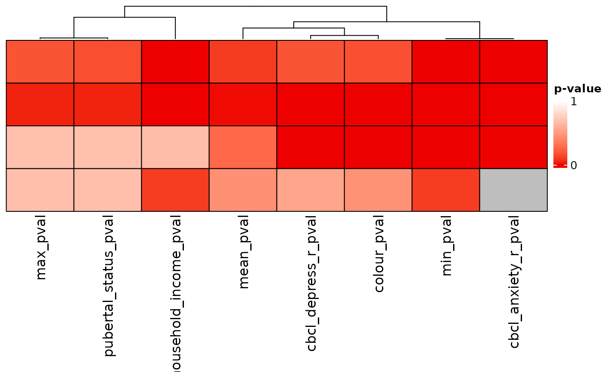

Heatmap of p-values
Usage
pval_heatmap(
ext_sol_df,
order = NULL,
cluster_columns = TRUE,
cluster_rows = FALSE,
show_row_names = FALSE,
show_column_names = TRUE,
min_colour = "red2",
max_colour = "white",
legend_breaks = c(0, 1),
col = circlize::colorRamp2(legend_breaks, c(min_colour, max_colour)),
heatmap_legend_param = list(color_bar = "continuous", title = "p-value", at = c(0, 1)),
rect_gp = grid::gpar(col = "black"),
column_split_vector = NULL,
row_split_vector = NULL,
column_split = NULL,
row_split = NULL,
...
)Arguments
- ext_sol_df
An ext_solutions_df class object (produced from the function
extend_solutions.- order
Numeric vector containing row order of the heatmap.
- cluster_columns
Whether columns should be sorted by hierarchical clustering.
- cluster_rows
Whether rows should be sorted by hierarchical clustering.
- show_row_names
Whether row names should be shown.
- show_column_names
Whether column names should be shown.
- min_colour
Colour used for the lowest value in the heatmap.
- max_colour
Colour used for the highest value in the heatmap.
- legend_breaks
Numeric vector of breaks for the legend.
- col
Colour function for
ComplexHeatmap::Heatmap()- heatmap_legend_param
Legend function for
ComplexHeatmap::Heatmap()- rect_gp
Cell border function for
ComplexHeatmap::Heatmap()- column_split_vector
Vector of indices to split columns by.
- row_split_vector
Vector of indices to split rows by.
- column_split
Standard parameter of
ComplexHeatmap::Heatmap.- row_split
Standard parameter of
ComplexHeatmap::Heatmap.- ...
Additional parameters passed to
ComplexHeatmap::Heatmap.
Value
Returns a heatmap (class "Heatmap" from package ComplexHeatmap) that displays the provided p-values.
Examples
# \donttest{
dl <- data_list(
list(income, "household_income", "demographics", "ordinal"),
list(pubertal, "pubertal_status", "demographics", "continuous"),
list(fav_colour, "favourite_colour", "demographics", "categorical"),
list(anxiety, "anxiety", "behaviour", "ordinal"),
list(depress, "depressed", "behaviour", "ordinal"),
uid = "unique_id"
)
#> ℹ 139 observations dropped due to incomplete data.
sc <- snf_config(
dl,
n_solutions = 4,
dropout_dist = "uniform",
max_k = 50
)
#> ℹ No distance functions specified. Using defaults.
#> ℹ No clustering functions specified. Using defaults.
sol_df <- batch_snf(dl, sc)
ext_sol_df <- extend_solutions(sol_df, dl)
pval_heatmap(ext_sol_df)

# }